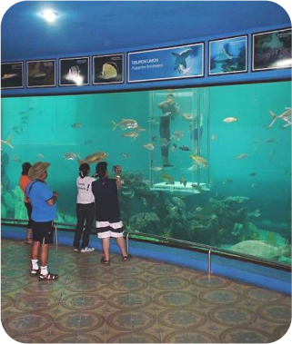
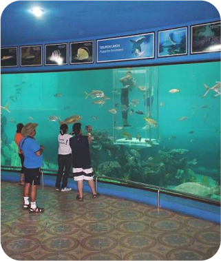

Pekalongan, a city located in the central part of Java Island, Indonesia, charms with its rich history and culture. Known as the "City of Batik," Pekalongan is where the art and heritage of batik flourish. The city offers captivating textile art with its colorful patterns and distinctive designs. Besides its cultural richness, Pekalongan also boasts beautiful natural landscapes, with winding rivers cutting through the city and captivating mountain views in the surrounding areas. Additionally, the city is renowned for the friendliness of its people and delicious cuisine, reflecting the diversity of Indonesian culinary traditions. Pekalongan features various cultural attractions, such as museums that unveil the history of batik and local culture, as well as vibrant festivals like the Pekalongan Batik Festival, showcasing the city's rich batik heritage. With its blend of natural beauty, art, and culture, Pekalongan is an enticing destination for anyone seeking to experience Indonesia's richness in one beautiful city.
 



booking
Tour
Destination
About Us
Contact
City in Jawa Tengah
Book Ticket
Description
Our Story
Work with us
Address: Pe.Holandia No.205A
Millennium City, PH17
Phone: 023 456 7890
Email: phnes.travels@gmail.com
Maps: Millennium City, Accra